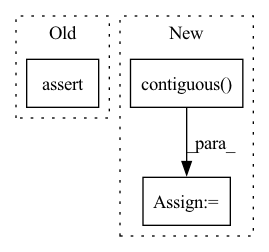

Pattern ID :10174

Before Change
self.save_for_backward(input, second, rbot0, rbot1)
assert (input.is_contiguous() == True)
assert (second.is_contiguous() == True)
output = second.new_zeros([second.size(0), second.size(1), second.size(2), second.size(3)])
After Change
self.save_for_backward(input, second, rbot0, rbot1)
input = input.contiguous()
second = second.contiguous()
output = second.new_zeros([second.size(0), second.size(1), second.size(2), second.size(3)])
In pattern: SUPERPATTERN
Frequency: 5
Non-data size: 3
Instances
Fragment ID: 35954412
Project Name: prunetruong/gocor
Commit Name: 24a24d0cbd5163d50ccd3407f334442144b62b73
Time: 2021-06-09
Author: truongp@ethz.ch
File Name: GOCor/local_correlation/correlation.py
M Class Name: _FunctionCorrelationTranspose
N Class Name: _FunctionCorrelationTranspose
M Method Name: forward(3)
N Method Name: forward(3)
M Parent Class: torch.autograd.Function
N Parent Class: torch.autograd.Function
M File Name: GOCor/local_correlation/correlation.py
N File Name: GOCor/local_correlation/correlation.py
M Start Line: 397
M End Line: 398
N Start Line: 397
N End Line: 398
'>
Before Change
self.save_for_backward(first, second, rbot0, rbot1)
assert (first.is_contiguous() == True)
assert (second.is_contiguous() == True)
output = first.new_zeros([first.size(0), 81, first.size(2), first.size(3)])
After Change
self.save_for_backward(first, second, rbot0, rbot1)
first = first.contiguous()
second = second.contiguous()
output = first.new_zeros([first.size(0), 81, first.size(2), first.size(3)])
'>
Fragment ID: 35954421
Project Name: prunetruong/gocor
Commit Name: 24a24d0cbd5163d50ccd3407f334442144b62b73
Time: 2021-06-09
Author: truongp@ethz.ch
File Name: GOCor/local_correlation/correlation.py
M Class Name: _FunctionCorrelation
N Class Name: _FunctionCorrelation
M Method Name: forward(3)
N Method Name: forward(3)
M Parent Class: torch.autograd.Function
N Parent Class: torch.autograd.Function
M File Name: GOCor/local_correlation/correlation.py
N File Name: GOCor/local_correlation/correlation.py
M Start Line: 287
M End Line: 288
N Start Line: 287
N End Line: 288
'>
Before Change
def backward(self, gradOutput):
first, second, rbot0, rbot1 = self.saved_tensors
assert (gradOutput.is_contiguous() == True)
gradFirst = first.new_zeros([first.size(0), first.size(1), first.size(2), first.size(3)]) if \
self.needs_input_grad[0] == True else None
After Change
def backward(self, gradOutput):
first, second, rbot0, rbot1 = self.saved_tensors
gradOutput = gradOutput.contiguous()
gradFirst = first.new_zeros([first.size(0), first.size(1), first.size(2), first.size(3)]) if \
self.needs_input_grad[0] == True else None
gradSecond = first.new_zeros([first.size(0), first.size(1), first.size(2), first.size(3)]) if \
'>
Fragment ID: 35954416
Project Name: prunetruong/gocor
Commit Name: 24a24d0cbd5163d50ccd3407f334442144b62b73
Time: 2021-06-09
Author: truongp@ethz.ch
File Name: GOCor/local_correlation/correlation.py
M Class Name: _FunctionCorrelation
N Class Name: _FunctionCorrelation
M Method Name: backward(2)
N Method Name: backward(2)
M Parent Class: torch.autograd.Function
N Parent Class: torch.autograd.Function
M File Name: GOCor/local_correlation/correlation.py
N File Name: GOCor/local_correlation/correlation.py
M Start Line: 337
M End Line: 337
N Start Line: 337
N End Line: 337
'>
Before Change
def multiclass_dice_coeff(input: Tensor, target: Tensor):
assert input.size() == target.size()
dice = 0
// remove backgroud region
for channel in range(1, input.shape[1]):
After Change
def multiclass_dice_coeff(input: Tensor, target: Tensor):
Batchsize, Channel = input.shape[0], input.shape[1]
y_pred = input.float().contiguous().view(Batchsize, Channel, -1)
y_true = target.long().contiguous().view(Batchsize, -1)
y_true = F.one_hot(y_true, Channel) // N,H*W -> N,H*W, C
y_true = y_true.permute(0, 2, 1) // H, C, H*W
assert y_pred.size() == y_true.size()
dice = 0
// remove backgroud region
'>
Fragment ID: 35954413
Project Name: junqiangchen/pytorchdeeplearing
Commit Name: 4c0130e39ce545780538b929f1a87c71404de340
Time: 2022-07-12
Author: 1207173174@qq.com
File Name: model/metric.py
M Class Name: AnonimousClass
N Class Name: AnonimousClass
M Method Name: multiclass_dice_coeff(2)
N Method Name: multiclass_dice_coeff(2)
M Parent Class:
N Parent Class:
M File Name: model/metric.py
N File Name: model/metric.py
M Start Line: 33
M End Line: 37
N Start Line: 34
N End Line: 43
'>
Before Change
def backward(self, gradOutput):
input, second, rbot0, rbot1 = self.saved_tensors
assert (gradOutput.is_contiguous() == True)
gradInput = input.new_zeros([input.size(0), input.size(1), input.size(2), input.size(3)]) if \
self.needs_input_grad[0] == True else None
After Change
def backward(self, gradOutput):
input, second, rbot0, rbot1 = self.saved_tensors
gradOutput = gradOutput.contiguous()
gradInput = input.new_zeros([input.size(0), input.size(1), input.size(2), input.size(3)]) if \
self.needs_input_grad[0] == True else None
gradSecond = second.new_zeros([second.size(0), second.size(1), second.size(2), second.size(3)]) if \
'>
Fragment ID: 35954410
Project Name: prunetruong/gocor
Commit Name: 24a24d0cbd5163d50ccd3407f334442144b62b73
Time: 2021-06-09
Author: truongp@ethz.ch
File Name: GOCor/local_correlation/correlation.py
M Class Name: _FunctionCorrelationTranspose
N Class Name: _FunctionCorrelationTranspose
M Method Name: backward(2)
N Method Name: backward(2)
M Parent Class: torch.autograd.Function
N Parent Class: torch.autograd.Function
M File Name: GOCor/local_correlation/correlation.py
N File Name: GOCor/local_correlation/correlation.py
M Start Line: 440
M End Line: 440
N Start Line: 440
N End Line: 440